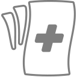
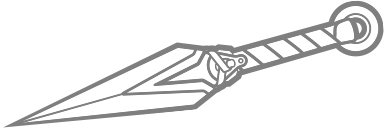

Arsenal y Habilidades del Personaje

Ofuda de Sanación (Fuego Principal)
Lanza talismanes curativos que buscan a los aliados. Recarga automática.
- Ventaja: Auto-apuntado sutil; ideal para curar objetivos móviles.
- Desventaja: Tienen tiempo de viaje lento a larga distancia.

Kunai (Fuego Secundario)
Lanza proyectiles con un daño crítico extremadamente alto en la cabeza.
- Ventaja: Multiplicador de 2.5x en headshot (120 de daño) capaz de eliminar objetivos frágiles.
- Desventaja: Daño al cuerpo muy bajo (45). Exige alta precisión mecánica.
Paso Rápido (L1)
Teletranspórtate directamente a un aliado a través de las paredes.
- Ventaja: La mejor habilidad de escape y reposicionamiento que atraviesa estructuras.
- Desventaja: Depende totalmente de la posición de un aliado vivo.
Suzu de Protección (R1)
Vuelve invulnerables brevemente a los aliados y purifica efectos negativos.
- Ventaja: Cancela habilidades definitivas enteras y limpia estados alterados (anti-cura).
- Desventaja: Tiempo de reutilización muy alto; un mal uso deja vulnerable al equipo.

Marcha del Kitsune (Ultimate)
Invoca un espíritu de zorro que otorga velocidad de movimiento, de ataque y recarga rápida.
- Ventaja: Prácticamente asegura ganar cualquier enfrentamiento grupal (teamfight).
- Desventaja: Se desperdicia si el equipo no acompaña la ofensiva o si el enemigo tiene defensas activas.
Talentos y Mejoras de Habilidad
Habilidades pasivas y progresión del personaje.
VENTAJA MENOR
(NIVEL 2)
Atención de urgencia
La velocidad de proyectil de Ofuda de sanación aumenta un 50 % al rastrear aliados que tienen menos de la mitad de salud.


Vidente
Los impactos de kunái lanzan 2 Ofudas de sanación a un aliado que tengas delante.
VENTAJA MAYOR
(NIVEL 3)
Paso preparado
Paso ligero otorga a Kiriko un 40% de ataque aumentado y velocidad de recarga durante 3 segundos.


Baile
Suzu de protección otorga un 30% más de velocidad de movimiento a los aliados durante 4 segundos.